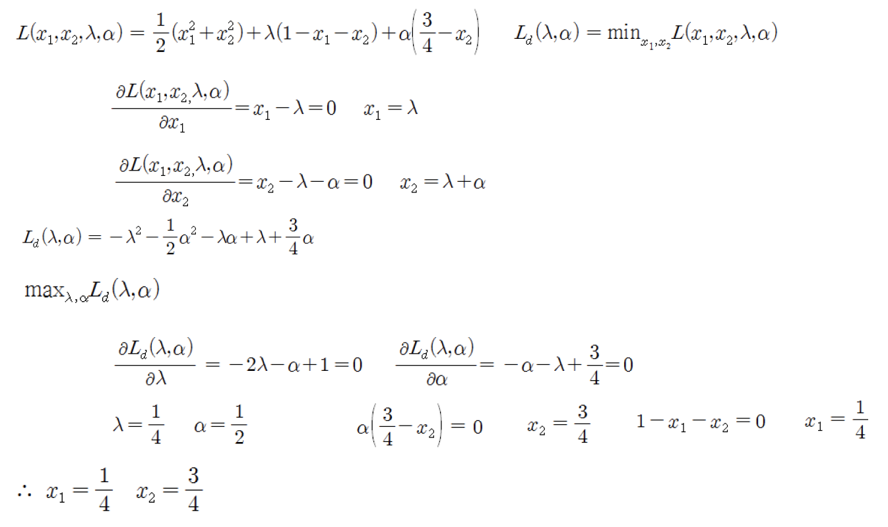

9th
함수 최적화
라그랑주 승수법 (Lagrangian Multiplier Method) - 제약조건 최적화 문제를 라그랑주 함수로 변환한 다음, 쌍대 함수를 최적화하여 해결하는 방법

회귀 (regression) 문제의 최적 함수
주어진 데이터를 가장 잘 근사 (approximation)하는 함수
최소 평균제곱법 (least mean square method)
- 오차함수 (loss function) 또는 에너지 함수

경사 하강법 (gradient descent method)
함수의 최소값 위치를 찾는 문제에서 오차 함수의 gradient 반대 방향으로 조금씩 움직여가며 최적의 파라미터를 찾으려는 방법
데이터의 입력과 출력을 이용하여 각 파라미터에 대한 gradient를 계산하여 파라미터를 반복적으로 조금씩 조정


gradient
각 파라미터에 대해 편미분한 벡터 \((\frac{\partial{E}}{\partial{a}}, \frac{\partial{E}}{\partial{b}})\)초
최대 경사법 (gradient descent method)
회귀 모델, 신경망 등 기본 학습 방법
local minimum에 빠질 위험
개선된 형태의 여러 방법 존재

요약
탐색
- 상태공간과 탐색 - 상태 공간, 상태 공간 그래프
- 맹목적 탐색 - DFS, BFS, 반복적 깊이 심화 탐색, 양방향 탐색
- 정보이용 탐색 - heuristic, 언덕 오르기 방법, 최상우선 탐색, 빔탐색, A* algorithm
- 게임에서의 탐색 - 게임 트리, mini-max algorithm, \(\alpha - \beta\) 가지치기, Monte Carlo tree search
- 제약조건 만족 문제 - 백트래킹 탐색, 제약조건 전파 방법
최적화
- 조합 최적화 - 유전 알고리즘, 메타 heuristic
- 함수 최적화 - 함수 최적화 문제, 제약조건 최적화, gradient descent method
지식표현과 추론
- 지식
- 규칙
- 프레임
- 논리
- 의미망
- 스크립트
- 온톨로지
- 함수에 의한 지식 표현
- 불확실한 지식 표현
- 규칙 기반 시스템
- 심볼 그라운딩 문제와 프레임 문제
- CYC 프로젝트

지식 표현
데이터 피라미드
데이터 (data)
- 특정 분야에서 관측된 아직 가공되지는 않은 것
- 사실인 것처럼 관측되지만 오류나 잡음을 포함 가능
정보 (information)
- 데이터를 가공하여 어떤 목적이나 의미를 갖도록 한 것
지식 (knowledge)
- 정보를 취합하고 분석하여 얻은 대상에 대해 사람이 이해한 것
지혜 (wisdom)
- 경험과 학습을 통해서 얻은 지식보다 높은 수준의 통찰

지식 (knowledge)
경험이나 교육을 통해 얻어진 전문적 이해(understanding)와 체계화 된 문제 해결 능력
어떤 주제나 분야에 대한 이론적 또는 실제적인 이해, 또는 현재 알려진 사실과 정보의 모음
컴퓨터를 통한 지식 표현 및 처리
- 프로그램이 쉽게 처리할 수 있도록 정형화된 형태로 표현
- 규칙, 프레임, 논리, 의미망, 스크립트, 수치적 함수 등
암묵지 (tacit knowledge)
형식을 갖추어 표현하기 어려운, 학습과 경험을 통해 쌓은 지식
형식지 (explicit knowledge)
비교적 쉽게 형식을 갖추어 표현될 수 있는 지식
절차적 지식 (procedural knowledge)
문제해결 절차 기술
선언적 지식 (declarative knowledge)
어떤 대상의 성질, 특성이나 관계 서술
규칙 (rule)
‘~이면 이다’ 또는 ’하면, ~하다’와 같은 조건부 지식을 표현하는 IF-THEN 형태의 문장
직관적, 이해하기 쉬움
규칙 획득 및 표현
ex) 신호등이 녹색일 때는 건널목을 안전하게 건널 수 있고, 빨간색일 때는 길을 건너지 말아야 한다.
대상, 속성, 행동, 판단의 정보 추출
- 대상 - 신호등
- 속성 - 녹색, 빨간색
- 행동/판단 - 건넌다, 멈춘다
표현
- IF 신호등이 녹색이다 THEN 행동은 건넌다
- IF 신호등이 빨간색이다 THEN 행동은 멈춘다

IF
주어진 정보나 사실에 대응될 조건
조건부 (conditional part, antecedent)
THEN
조건부가 만족될 때의 판단이나 행
결론부 (conclusion, consequent)